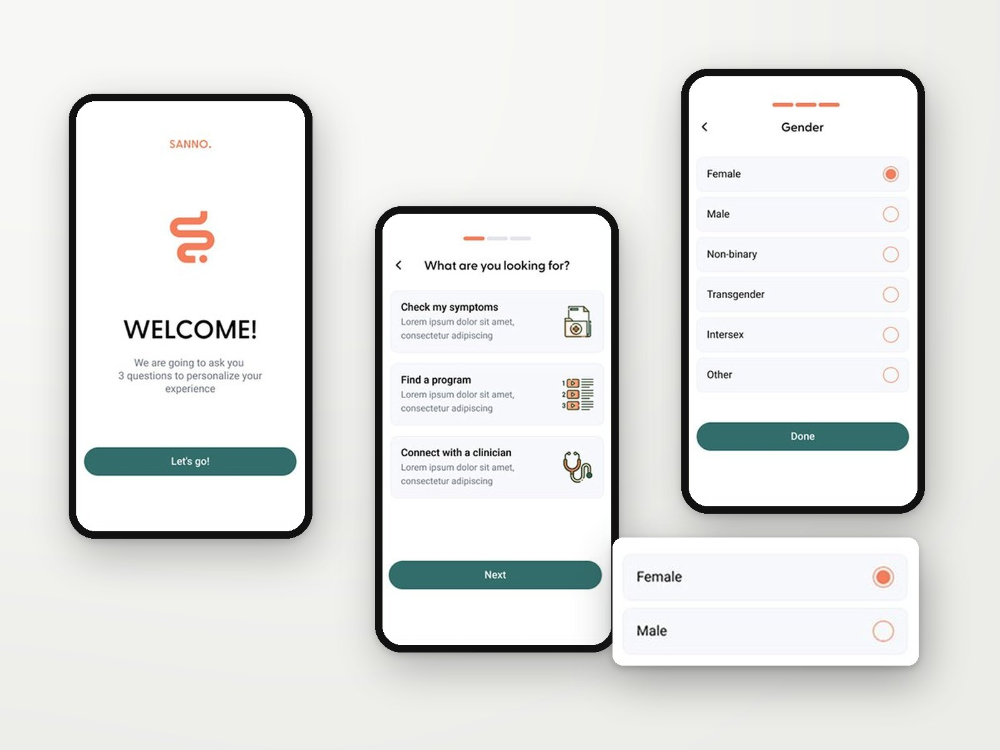
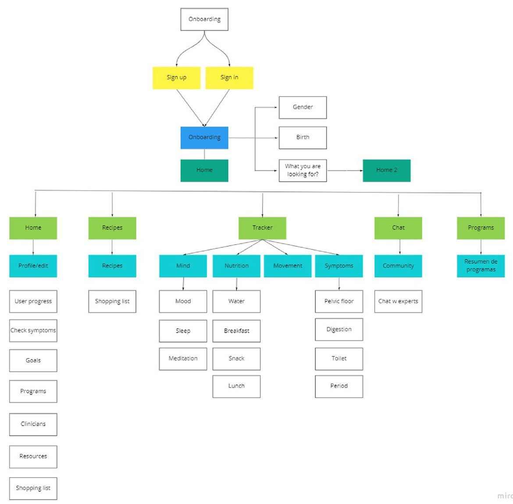
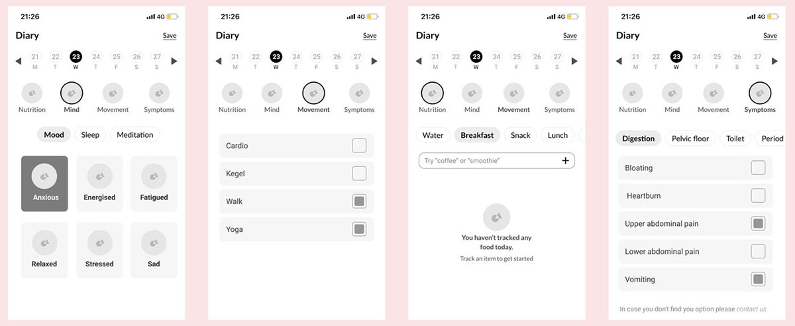
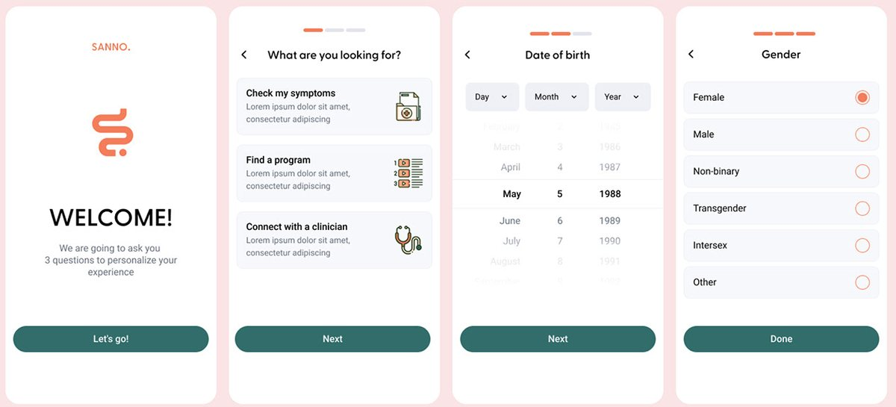
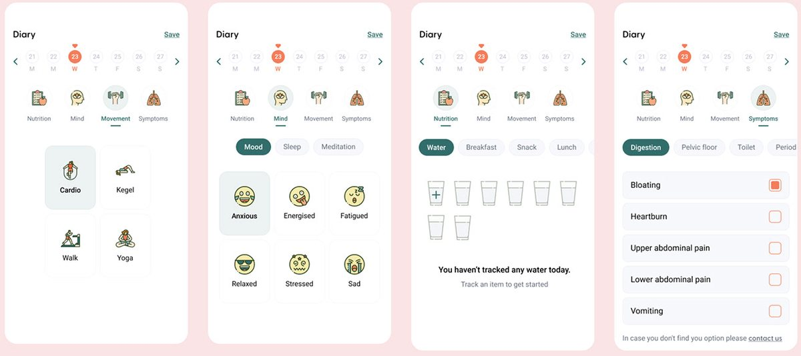
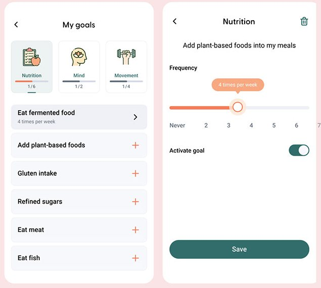
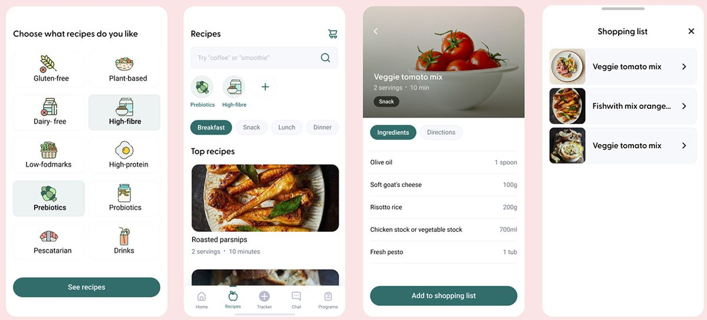
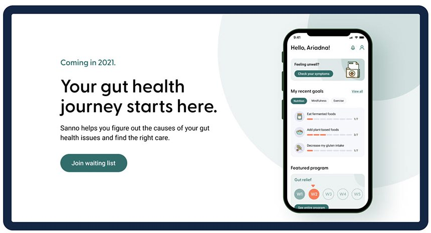

10Health app · UX/UIApp de salud · UX/UI · 2021
SannoSanno
Redesign of a gut-health app that helps people find the causes of their symptoms and the right care through programs, coaching and personalized recommendations.
Rediseño de una app de salud digestiva que ayuda a encontrar las causas de los síntomas y el cuidado adecuado mediante programas, coaching y recomendaciones personalizadas.

The project
El proyecto
Sanno is an app for people with gut health issues. It offers a toolkit of virtual coaching and personalized recommendations to strengthen the microbiome, with no pills or restrictive diets.
Sanno es una app para personas con problemas de salud digestiva. Ofrece herramientas de coaching virtual y recomendaciones personalizadas para fortalecer el microbioma, sin pastillas ni dietas restrictivas.
The challenge
El desafío
Redesign the mobile app so users could find more features related to their gut issues, and solutions through programs with health professionals, recipes, meditation and yoga, among others.
Rediseñar la app mobile para que los usuarios encuentren más funcionalidades relacionadas con sus problemas digestivos y soluciones a través de programas con profesionales de la salud, recetas, meditación y yoga, entre otros.
Benchmark
Benchmark
| Cara Care | MyFitnessPal | |
|---|---|---|
| Symptoms trackerRegistro de síntomas | ✓ | ✕ |
| Food trackerRegistro de comidas | ✓ | ✓ |
| Mental healthSalud mental | ✓ | ✕ |
| CommunityComunidad | ✕ | ✕ |
| Chat with expertsChat con expertos | ✕ | ✓ |
| RecipesRecetas | ✓ | ✕ |
| ProgramsProgramas | ✓ | ✓ |
| Guided audioAudio guiado | ✕ | ✓ |
Neither competitor offered a community, which became an opportunity for Sanno.
Ninguno de los dos tenía comunidad, y eso se convirtió en una oportunidad para Sanno.
“I can't see my food history and select the foods I ate last week. I tend to repeat a lot of meals and have to type them again every week.”
“No puedo ver mi historial y elegir lo que comí la semana pasada. Repito muchas comidas y tengo que escribirlas de nuevo cada semana.”
Pain point from user interviewsDolor detectado en entrevistas






The solution
La solución
An app built in React with a backend where most content can be managed, giving the client freedom to change it. A more professional experience, refined with people who already used the app, plus a community space where users can also find specialized doctors.
Una app hecha en React con un backend desde donde se administra la mayor parte del contenido, para que el cliente pueda modificarlo. Una experiencia más profesional, ajustada con personas que ya usaban la app, y un espacio de comunidad donde también encontrar médicos especialistas.

Outcome
Resultado
The redesigned app launched and is live, with content the client can manage on its own and a new community space.
La app rediseñada se lanzó y está en uso, con contenido que el cliente administra por su cuenta y un nuevo espacio de comunidad.